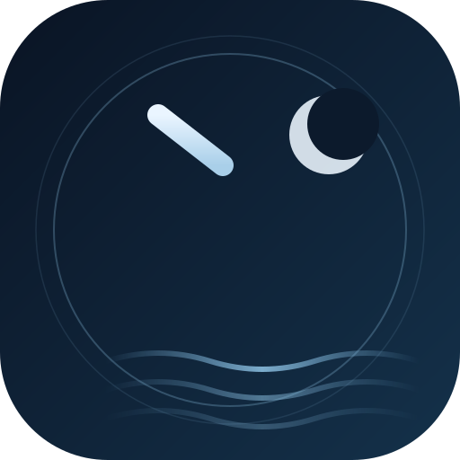
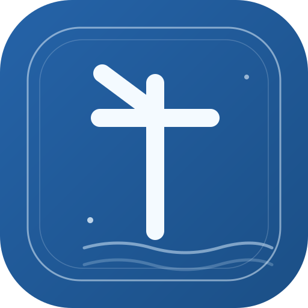
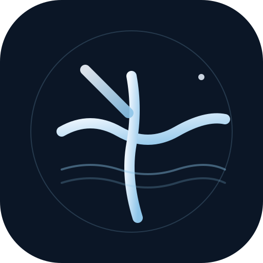

请选一版；也可以指出想混搭的元素（例如用第 3 版的线条 + 第 1 版的月亮）。

深蓝夜色 + 弯月 + 水波，中间是几何化的「千」字。最贴合你作品的暗夜叙事气质，辨识度高。

印章式双边框 + 蓝色底 + 粗笔画的「千」与水印波纹。更像一个个人印记，稳重、有签名感。

三道流动的白色水线构成抽象的「千」，没有具象文字。最现代、最克制，小尺寸下也清晰。
每版都是矢量 SVG，可直接用作 favicon（16px 依然可辨认）和页面顶部 LOGO；选定后我会接入站点并同步替换 favicon。 当前页面只是对比预览，还没有替换线上图标。